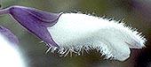

|
|
|
|
|
|
|
|
|
|
Seeds |
Seedling |
Leaves |
Salvinorin A |
Inflorescence |
Corolla |
Salvinorin A |
|
|
|
|
|
|
|
|
|
|
| Daniel Siebert's calendar of upcoming Salvia divinorum related public speaking engagements. |
| The Salvia divinorum FAQ. Answers to Frequently Asked Questions about Salvia divinorum. |
| The Salvia divinorum User's Guide. A basic educational manual. Essential reading for anyone new to Salvia divinorum. |
| How to obtain effects from smoked Salvia divinorum. Important advice on smoking techniques. |
| The Legal Status of Salvia divinorum. An international listing of laws, regulations, and proposed legislation. |
| The Salvia divinorum Observer. A newsletter that provides information about Salvia divinorum-related news and events. |
| How to propagate and grow Salvia divinorum. Horticultural advice. |
| Extended gallery of Salvia divinorum photos. A growing collection of plant portraits and related images. |
| Experiential reports. Some exceptional firsthand accounts of Salvia divinorum experiences. |
| The Salvia divinorum chapter of "Pharmako/poeia" by Dale Pendell. (Also available in an Italian translation). |
| The Leaves of the Shepherdess by Kathleen Harrison. A healing salvia experience amongst the Mazatecs. |
| Roads Where There Have Long Been Trails by Kathleen Harrison. An ethnobotanist's journey through the Sierra Mazateca. |
| Lessons in The Use of Mazatec Psychoactive Plants by Bret Blosser. An anthropologist receives lessons from a Mazatec shaman. | The Living Truth by William Arden Ruth. Salvia divinorum and the right to pursue personal insight and spiritual growth. |
| On consulting Salvia divinorum as an "oracle." (Also available in an Italian translation) |
| Incorporating sounds and music into Salvia divinorum experiences. by Michael Evenmo. |
| Salvia divinorum breakthrough suggestions. by Michael Evenmo. |
| Salvia divinorum inspired arts. A collection of visual arts, poetry, and audio arts. |
| The virtual Salvia divinorum altar. Ceremonial objects and offerings dedicated to the spirit of Salvia divinorum. |
| Salvia is Not an Escapist Drug. Quite the Contrary; It is a Philosopher�s Tool. (Daniel Siebert interviewed by Joerg Auf dem Hoevel). |
| The "Salvia divinorum" segment of Sacred Weeds. A television documentary that first aired on August 10th, 1998. |
| Daniel Siebert interviewed by Lorenzo Hagerty. Psychedelic Salon (podcast 081--"Salvia divinorum"). |
| Daniel Siebert interviewed by "Max Freakout." Psychonautica (podcast 04--"Salvia divinorum"). |
| Salvia divinorum from A�Z with Daniel Siebert, Part 1. The Entheogenic Evolution (Daniel Siebert interviewed by Martin Ball). |
| Salvia divinorum from A�Z with Daniel Siebert, Part 2. The Entheogenic Evolution (Daniel Siebert interviewed by Martin Ball). |
| The Facts About Salvia divinorum: An Interview with Daniel Siebert. Gnostic Media Podcast #43 (Daniel Siebert interviewed by Jan Irvin). |
| Maps of Salvia divinorum's native region. The Mazatec region in the northeast corner of the state of Oaxaca, Mexico. |
| A beautiful Chime� rendering of salvinorin-A showing electron clouds. Use your mouse to manipulate the molecule! |
| Scanning electron micrographs of a Salvia divinorum seed. Photos by Michael Dunlap. |
| Video of a hummingbird visiting Salvia divinorum flowers. Recorded by Carl P. McCall. |
| Photomicrographs of a Salvia divinorum leaf. 40x, 100x, 200x, 400x, 1000x. Nice trichomes! |
| Articles from Scientific Journals and Other Publications (Some of the following files are in PDF format. You'll need the Adobe Acrobat Reader to view them) |
|  |
The Botany of Salvia divinorum (Labiatae) by Reisfield AS. SIDA 15: 349-366 (1993). This web-optimized version of Reisfield's paper includes lots of great photos. |
| Salvia divinorum and Salvinorin A: New Pharmacologic Findings. |
|
| Localization of Salvinorin A and Related Compounds in Glandular Trichomes of the Psychoactive Sage, Salvia divinorum. |
|
| High Performance Liquid Chromatographic Quantification of Salvinorin A from Tissues of Salvia divinorum Epling & Játiva-M. |
|
| Salvinorin A: A Potent Naturally Occurring Nonnitrogenous Kappa Opioid Selective Agonist. |
|
| Salvinorin A, an Active Component of the Hallucinogenic Sage Salvia divinorum, is a Highly Efficacious |
|
| Comparison of Pharmacological Activities of Three Distinct Kappa-Ligands (Salvinorin A, TRK-820 and 3FLB) |
|
|
Effects of Salvinorin A on Locomotor Sensitization to D2/D3 Dopamine Agonist Quinpirolem. | |
| Antinociceptive and Hypothermic Effects of Salvinorin A are Abolished in a Novel Strain of KOR-1 KO Mice. |
|
| Daniel Siebert Speaks� |
|
| The History of the First Salvia divinorum Plants Cultivated Outside of Mexico. | |
| The Hallucinogenic Herb Salvia divinorum and Its Active Ingredient Salvinorin A Inhibit Enteric Cholinergic Transmission in the Guinea Pig Ileum. |
|
| The Hallucinogenic Herb Salvia divinorum and Its Active Ingredient Salvinorin A Reduce Inflammation-Induced Hypermotility in Mice. |
|
| Inhibitory Effect of Salvinorin A, from Salvia divinorum, on Ileitis-Induced Hypermotility: |
|
| Salvinorin A Inhibits Colonic Transit and Neurogenic Ion Transport in Mice by Activating Kappa-Opioid and Cannabinoid Receptors. |
|
| Selective Natural Kappa Opioid and Cannabinoid Receptor Agonists with a Potential Role in the Treatment of Gastrointestinal Dysfunction. |
|
| Salvinorin A Exerts Opposite Presynaptic Controls on Neurotransmitter Exocytosis from Mouse Brain Nerve Terminals. |
|
| 2-Methoxymethyl-Salvinorin B is a Potent Kappa Opioid Receptor Agonist with Longer Lasting Action In Vivo than Salvinorin A. |
|
| Comparison of the Diuretic Effects of Chemically Diverse Kappa Opioid Agonists in Rats: Nalfurafine, U50,488H, and Salvinorin A |
|
| Salvinorin A: The �Magic Mint� Hallucinogen Finds a Molecular Target in the Kappa Opioid Receptor. |
|
| Salvinorin A: A Novel and Highly Selective Kappa-Opioid Receptor Agonist. |
|
| Salvinorin A: From Natural Product to Human Therapeutics. |
|
| Differential Helical Orientations Among Related G Protein-Coupled Receptors Provide a Novel Mechanism for Selectivity: |
|
| CoMFA Analyses of C-2 Position Salvinorin A Analogs at the Kappa-Opioid Receptor Provides Insights Into Epimer Selectivity. |
|
| Acute Physiologic and Chronic Histologic Changes in Rats and Mice Exposed to the Unique Hallucinogen Salvinorin A. |
|
| The Plant-Derived Hallucinogen, Salvinorin A, Produces Kappa-Opioid Agonist-like Discriminative Effects in Rhesus Monkeys. |
|
| The Discriminative Effects of the Kappa-Opioid Hallucinogen Salvinorin A in Nonhuman Primates: Dissociation from Classic Hallucinogen Effects. |
|
| Comparison of the Discriminative Stimulus Effects of Salvinorin A and its Derivatives to U69,593 and U50,488 in Rats. |
|
| The Hallucinogen Derived from Salvia divinorum, Salvinorin A, has �-Opioid Agonist Discriminative Stimulus Effects in Rats. | |
| Discriminative Stimulus Effects of 1-(2,5-dimethoxy-4-methylphenyl)-2-aminopropane in Rhesus Monkeys. | |
| Effects of Salvinorin A, a Kappa-Opioid Hallucinogen, on a Neuroendocrine Biomarker Assay |
|
| A New Species of Salvia from Mexico. |
|
| A New Mexican Psychotropic Drug From the Mint Family. |
|
| Notes on the Present Status of Ololiuhqui and the Other Hallucinogens of Mexico. |
|
| A Mazatec girl preparing Salvia divinorum leaves on a metate. |
|
| In Search of the Magic Plant "Ska Maria Pastora"
in the Mazatec Country. |
|
| Salvinorin, A New trans-Neoclerodane Diterpene from Salvia divinorum (Labiatae). |
|
| Ethnopharmacology of Ska Maria Pastora (Salvia divinorum, Epling and Játiva-M.). |
|
| Divinorin A, a Psychotropic Terpenoid, and Divinorin B from the Hallucinogenic Mexican Mint, Salvia divinorum. |
|
| Loliolide from Salvia divinorum. |
|
| Studies of Salvia divinorum (Lamiaceae), an Hallucinogenic Mint from the Sierra Mazateca in Oaxaca, Central Mexico. |
|
| Salvia divinorum and the Unique Diterpene Hallucinogen, Salvinorin (Divinorin) A. |
|
| "Divinorin C," a New Neoclerodane Diterpene from a Bioactive TLC Fraction of Salvia divinorum. |
|
| Salvinorin C, a New Neoclerodane Diterpene from a Bioactive Fraction of the Hallucinogenic Mexican Mint Salvia divinorum. |
|
| The Early History of Salvia divinorum. |
|
| Some photos of Salvia divinorum from the Sierra Mazateca. by L.J. Valdés III | |
| The Absolute Stereochemistry of Salvinorins. Also available in PDF format here. |
|
| Kappa-Opioid Receptor-Mediated Effects of the Plant-Derived Hallucinogen, Salvinorin A, on Inverted Screen Performance in the Mouse. |
|
| Salvinorins D-F, New Neoclerodane Diterpenoids from Salvia divinorum, and an Improved Method for the Isolation of Salvinorin A. |
|
| Divinatorins A-C, New Neoclerodane Diterpenoids from the Controlled Sage Salvia divinorum. And supporting information. |
|
| Studies Toward the Pharmacophore of Salvinorin A, a Potent Kappa Opioid Receptor Agonist. |
|
| Autoxidation of Salvinorin A under Basic Conditions. |
|
| 8-epi-Salvinorin B: Crystal Structure and Affinity at the Kappa Opioid Receptor. |
|
| The Chemistry of Salvia divinorum. |
|
| Standard Protecting Groups Create Potent and Selective Kappa Opioids: Salvinorin B Alkoxymethyl Ethers |
|
| Antidepressant Effects of the Herb Salvia divinorum: a Case Report. |
|
| Salvia divinorum: Clinical and Research Potential. | |
| Salvia divinorum and Salvinorin A: An Update on Pharmacology and Analytical Methodology. | |
| Use of Nonprohibited Hallucinogenic Plants: Increasing Relevance for Public Health? |
|
| A Facile Method for the Preparation of Deuterium Labeled Salvinorin A: Synthesis of [2,2,2-2H3]-Salvinorin A |
|
| Salvinicins A and B, New Neoclerodane Diterpenes from Salvia divinorum. |
|
| Neoclerodane Diterpenes as a Novel Scaffold for Mu Opioid Receptor Ligands. |
|
| An Opioid Agonist That Does Not Induce Mu-Opioid Receptor�Arrestin Interactions or Receptor Internalization. |
|
| Salvinorin A: Allosteric Interactions at the Mu-Opioid Receptor. |
|
| Determination of Salvinorin A in Body Fluids by High Performance Liquid Chromatography-Atmospheric Pressure Chemical Ionization. |
|
| Pharmacokinetics of the Plant-Derived Kappa-Opioid Hallucinogen Salvinorin A in Nonhuman Primates. |
|
| Psychopharmacology of the Hallucinogenic Sage Salvia divinorum. |
|
| Synthetic Studies of Neoclerodane Diterpenes from Salvia divinorum: Semisynthesis of Salvinicins A and B |
|
| Synthetic Studies of Neoclerodane Diterpenes from Salvia divinorum: Selective Modification of the Furan Ring. |
|
| Synthesis of Salvinorin A Analogues as Opioid Receptor Probes. |
|
| Synthetic Studies of Neoclerodane Diterpenes from Salvia divinorum: Preparation and Opioid Receptor Activity of Salvinicin Analogues. |
|
| Synthetic Studies of Neoclerodane Diterpenes from Salvia divinorum: Exploration of the 1-Position. |
|
| Synthetic Studies of Neoclerodane Diterpenes from Salvia divinorum: Role of the Furan in Affinity for Opioid Receptors. |
|
| Salvinorin A Analogs as Probes in Opioid Pharmacology. |
|
| Herkinorin Analogues With Differential �-Arrestin-2 Interactions. |
|
| Differential Effects of Opioid Agonists on G Protein Expression in CHO Cells Expressing Cloned Human Opioid Receptors. |
|
| The Effects of Herkinorin, the First �-Selective Ligand from a Salvinorin A-Derived Scaffold, in a Neuroendocrine Biomarker Assay in Non-Human Primates. |
|
| Unconditioned Behavioral Effects of the Powerful �-Opioid Hallucinogen, Salvinorin A: Fast Onset and Entry Into Cerebrospinal Fluid. |
|
| Chemical Methods for the Synthesis and Modification of Neoclerodane Diterpenes. |
|
| Neo-clerodane Diterpenes from the Hallucinogenic Sage Salvia divinorum. |
|
| Simple Preparative Isolation of Salvinorin A from the Hallucinogenic Sage, Salvia divinorum, by Centrifugal Partition Chromatography. |
|
| Asymmetric Synthesis of Salvinorin A, a Potent Kaapa Opioid Receptor Agonist. |
|
| Total Synthesis of the Hallucinogenic Neoclerodane Diterpenoid Salvinorin A. |
|
| Total Synthesis of 20-Norsalvinorin A. 1. Preparation of a Key Intermediate. |
|
| Quantification of the Plant-Derived Hallucinogen Salvinorin A in Conventional and Non-Conventional Biological Fluids | |
| Synthesis and In Vitro Pharmacological Evaluation of Salvinorin A Analogues Modified at C(2). | |
| Synthesis and In Vitro Pharmacological Studies of New C(2) Modified Salvinorin A Analogues. | |
| Synthesis and In Vitro Pharmacological Studies of C(4) Modified Salvinorin A Analogues. | |
| New Neoclerodane Diterpenoids Isolated From the Leaves of Salvia divinorum and Their Binding Affinities for Human Kappa Opioid Receptors. | |
| Synthesis and In Vitro Pharmacological Studies of New C(4)-Modified Salvinorin A Analogues. | |
| Depressive-like Effects of the Kappa-Opioid Receptor Agonist Salvinorin A on Behavior and Neurochemistry in Rats. | |
|
Depressive-like Effects of the Kappa Opioid Receptor Agonist Salvinorin A are Associated with Decreased Phasic Dopamine Release in the Nucleus Accumbens. | |
| Synthesis and In Vitro Evaluation of Salvinorin A Analogues: Effect of Configuration at C(2) and Substitution at C(18). | |
| Revised Structure of Deacetyl-1,10-didehydrosalvinorin G. | |
| Synthesis of Deacetyl-1,10-didehydrosalvinorin G. | |
| N-Methylacetamide Analogue of Salvinorin A: A Highly Potent and Selective Kappa Opioid Receptor Agonist with Oral Efficacy. | |
| Modification of the Furan Ring of Salvinorin A: Identification of a Selective Partial Agonist at the Kappa Opioid Receptor. | |
| Synthesis and Biological Evaluation of C-12 Triazole and Oxadiazole Analogs of Salvinorin A. | |
|
Exposure to the Selective Kappa-Opioid Receptor Agonist Salvinorin A Modulates the Behavioral and Molecular Effects of Cocaine in Rats. | |
|
Effect of Kappa-Opioid Receptor Agonists U69593, U50488H, Spiradoline and Salvinorin A on Cocaine-Induced Drug-Seeking in Rats. | |
| Identification of the Molecular Mechanisms by Which the Diterpenoid Salvinorin A Binds to Kappa-Opioid Receptors. | |
Structure-Based Design, Synthesis, and Biochemical and Pharmacological Characterization | |
| Unambiguous NMR Spectral Assignments of Salvinorin A. | |
| Biosynthesis of Salvinorin A Proceeds via The Deoxyxylulose Phosphate Pathway. | |
| Salvinorins J from Salvia divinorum: Mutarotation in the Neoclerodane System. | |
| Intramolecular Transacetylation in Salvinorins D and E. | |
| Convenient synthesis and in vitro pharmacological activity of 2-thioanalogs of salvinorins A and B. | |
| Short Synthesis of a Novel Class of Salvinorin A Analogs with Hemiacetalic Structure. | |
| Studies Towards the Synthesis of Salvinorin A. | |
| Determination of Salvinorins and Divinatorins in Salvia divinorum Leaves by Liquid Chromatography/Multistage Mass Spectrometry. | |
| Analysis of the Psychoactive Terpenoid Salvinorin A Content in Five Salvia divinorum Herbal Products. | |
| Determination of Salvinorin A and Salvinorin B in Salvia divinorum-Related Products Circulated in Japan. | |
| In Vitro Stability and Metabolism of Salvinorin A in Rat Plasma. | |
| Evaluation of the Transport, In Vitro Metabolism and Pharmacokinetics of Salvinorin A, a Potent Hallucinogen. | |
| The Detection and Quantitative Analysis of the Psychoactive Component of Salvia divinorum, Salvinorin A, | |
| The Antinociceptive Effect of Salvinorin A in Mice. | |
| Antinociceptive Profile of Salvinorin A, a Structurally Unique Kappa Opioid Receptor Agonist. | |
| A Unique Binding Epitope for Salvinorin A, a Non-Nitrogenous Kappa Opioid Receptor Agonist. | |
| Toward a Structure-Based Model of Salvinorin A Recognition of the Kappa-Opioid Receptor. | |
| A Combined Ligand-Based and Target-Based Drug Design Approach for G-Protein Coupled Receptors: | |
| Intramolecular Diels-Alder/Tsuji Allylation Assembly of the Functionalized Trans-Decalin of Salvinorin A. | |
| Dopamine D2High Receptors Stimulated by Phencyclidines, Lysergic Acid Diethylamide, Salvinorin A, and Modafinil. | |
| PCR and PCR-RFLP of the 5S-rRNA-NTS Region and Salvinorin A Analyses for the Rapid and Unequivocal Determination of Salvia divinorum. | |
| DNA Internal Standard for the Quantitative Determination of Hallucinogenic Plants in Plant Mixtures. | |
| Authentication and Ultra Performance Liquid Chromatography (UPLC)/MS Analysis of Magic Mint, Salvia divinorum and Its Related Plants. | |
| Analytical data of Designated Substances (Shitei-Yakubutsu) Controlled by the Pharmaceutical Affairs Law in Japan, Part I: GC-MS and LC-MS. | |
| Simple and Rapid Screening for Psychotropic Natural Products Using Direct Analysis in Real Time (DART)-TOFMS. | |
| Analyzing Salvia divinorum and its Active Ingredient Salvinorin A Utilizing Thin Layer Chromatography and Gas Chromatography/Mass Spectrometry. | |
| Direct Analysis of Salvia divinorum Leaves for Salvinorin A by Thin Layer Chromatography | |
| Hallucinatory and Rewarding Effect of Salvinorin A in Zebrafish: Kappa-Opioid and CB1-Cannabinoid Receptor Involvement. | |
| Involvement of Kappa-Opioid and Endocannabinoid System on Salvinorin A-Induced Reward. | |
| Kappa Opioid Mediation of Cannabinoid Effects of the Potent Hallucinogen, Salvinorin A, in Rodents. | |
| Potential Anxiolytic- and Antidepressant-Like Effects of Salvinorin A, the Main Active Ingredient of Salvia divinorum, in Rodents. | |
| Opioid Receptors and Legal Highs: Salvia divinorum and Kratom. | |
| Ethnopharmacognosy and Human Pharmacology of Salvia divinorum and Salvinorin A. |
|
| Psychoactive Card IV. Salvia divinorum Epling et Játiva: Leaves of the Shepherdess. |
|
|
Dose-Response Effects of Salvinorin A on Basal Dopamine Levels in the Caudate Putamen of C57BL/6J Mice. | |
|
Effects of the Plant-Derived Hallucinogen Salvinorin A on Basal Dopamine Levels in the Caudate Putamen | |
|
Pharmacokinetics of the Potent Hallucinogen, Salvinorin A in Primates Parallels the Rapid Onset and Short Duration of Effects in Humans. | |
|
Metabolic Changes in the Rodent Brain After Acute Administration of Salvinorin A. | |
|
Salvinorin A and Derivatives: Protection from Metabolism Does Not Prolong Short-Term, Whole-Brain Residence. | |
|
Effects of Acute and Repeated Administration of Salvinorin A on Dopamine Function in the Rat Dorsal Striatum. | |
|
A Select Set of Opioid Ligands Induce Up-Regulation by Promoting the Maturation | |
|
Kappa Opioids Promote the Proliferation of Astrocytes via G�� and �-Arrestin 2-Dependent MAPK-Mediated Pathways. | |
| Pharmacological Characterization of the Novel Kappa Opioid Agonist Salvinorin A in the Mouse |
|
| The Rise of a New Psychoactive Agent: Salvia divinorum. |
|
| Use of Salvia divinorum, an Unscheduled Hallucinogenic Plant: A Web-Based Survey of 500 Users. |
|
| Pattern of Use and Subjective Effects of Salvia divinorum Among Recreational Users. |
|
| Salvia divinorum�Prësenz einer neuen
Droge im Internet. [Salvia divinorum�Representation of a New Drug in the Internet.] |
|
| Internet Access to Salvia divinorum: Implications for Policy, Prevention, and Treatment. |
|
| College Student Use of Salvia divinorum. |
|
| Salvia divinorum: Effects and Use Among YouTube Users. |
|
| Salvia divinorum Use Among a College Student Sample. |
|
| Legally High? Legal Considerations of Salvia divinorum. |
|
| Trippin� on Sally D: Exploring Predictors of Salvia divinorum Experimentation. |
|
| Salvia divinorum: Exposures Reported to a Statewide Poison Control System Over 10 Years. |
|
| Salvia divinorum Epling et Játiva-M. (Labiatae): An Ethnopharmacological Investigation. |
|
|
Salvia divinorum: An Hallucinogenic Mint Which Might Become a New Recreational Drug in Switzerland. | |
| Salvinorin: The Psychedelic Essence of Salvia divinorum. An extraordinary book by D.M.Turner (1996). | |
| Salvia divinorum and Salvinorin A. The Best of The Entheogen Review 1992�2000. David Aardvark, Editor. | |
| The Mushrooms of Language by Henry Munn. This essay provides valuable insight into the Mazatec shamanic world. |
|
| NovaScreen� receptor selectivity report on salvinorin-A. | |
| Sage Wisdom: Salvia divinorum Branches Out. by Robert Campbell. An article from TRP Magazine (1997). | |
| Cultivating Diviner's Sage by Will Beifuss. An article from TRP Magazine (1997). | |
| Under the Spell of the Magic Mint. by Christopher Ketcham. Published in GQ magazine. June, 2007. | |
| Additional Information on Salvia divinorum and Related Topics | |
| Erowid - Salvia divinorum Vault. | |
| Lycaeum's Salvia Archives. | |
| Wikipedia article on Salvia divinorum. This webpage is continuously evolving. Anyone can participate in its development. | |
| Something from the Heffter Research Institute. | |
| USDA info on Salvia divinorum. | |
| Some basic information about Salvia divinorum. From the DEA's list of Drugs and Chemicals of Concern. | |
| A report on Salvia divinorum From the April 2003 edition of the Information Bulletin of the National Drug Intelligence Center. |
|
| Lagochilus inebrians. An intriguing psychoactive member of the Labiatae. | |
| Salvia splendens. A psychoactive sage??? | |
| Salvia Research Network. An international research group interested in improving our understanding of the genus Salvia. | |
| Relevant Organizations | |
| The Drug Policy Alliance. The leading organization working to broaden the public debate on drug policy and to promote realistic alternatives to the |
|
| MAPS (The Multidisciplinary Association for Psychedelic Studies). Supporting psychedelic research since 1986. | |
| Student Resources. Are you interested in entering the field of "psychedelic studies"? |
|
| Erowid. The world's most comprehensive resource for information about psychoactive drugs. |
|
| The Center for Cognitive Liberty & Ethics (CCLE). A nonprofit education, law, and policy center working in the public interest to foster freedom |
|
| The Council on Spiritual Practices. Dedicated to making direct experience of the sacred more available to more people. | |
| The Media Awareness Project. A worldwide network dedicated to drug policy reform. | |
| The Drug Reform Coordination Network. A national network of more than 21,000 activists and concerned citizens, including parents, |
|
| Students for Sensible Drug Policy. Students for Sensible Drug Policy is committed to providing education on harms caused by the War on Drugs working |
|
| The American Civil Liberties Union. Useful drug policy links. | |
| Mail Center | |
|
I am always interested in hearing reports from people regarding their experiences with this herb. Click here to send me your thoughts, comments, experiences, and suggestions. I do read most of the email I receive; however, I receive more email than I have time to reply to. When replying to email, I give priority to correspondence that is particularly important or interesting. Share this web site with a friend. This link opens a blank email window on most browsers. Please send your friends a note and let them know about The Salvia divinorum Research and Information Center. Don't forget to send them the URL: (http://sagewisdom.org). | |
| Copyright � 1995-present, Daniel Siebert. All rights reserved. Use of any content of this site, for any purpose other than personal edification, is strictly forbidden without the expressed, written permission of the author. | |